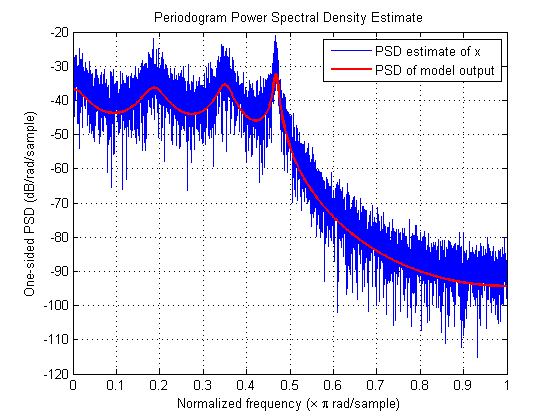
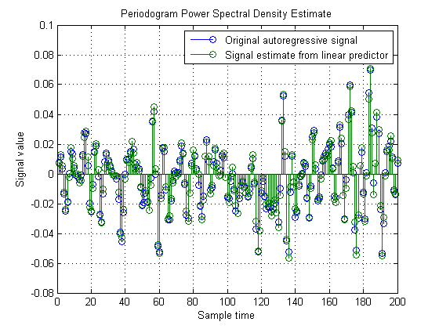

線形予測と自己回帰モデル作成
このデモは、自己回帰モデル作成と線形予測の関係を示すことを意図しています。線形予測と自己回帰モデル作成という 2 つの問題は、同じ数値結果を得ることが可能です。両方の問題の最終的な目的は、線形フィルターのパラメーターを確定することです。しかし、それぞれの問題で使われるフィルターは異なります。
目次
はじめに
線形予測の目的は、過去のサンプルの線形結合に基づいて、自己回帰プロセスの今後のサンプルを的確に予測できる FIR フィルターを決定することです。実際の自己回帰信号と予測信号の差は、予測誤差と呼ばれます。理想的には、この誤差が白色ノイズです。
自己回帰モデル作成の目的は、白色ノイズによって励起されたとき、モデル化する自己回帰プロセスと同じ統計値を持つ信号を生成する全極 IIR フィルターを決定することです。
入力が白色ノイズである全極フィルターを使用した AR 信号の生成
LPC 関数と FIR フィルターを使用して、目的の自己回帰信号を作成するために使用するパラメーターを生成します。ここでは FIR1 および LPC の使用は重要ではありません。たとえば、d を [1 1/2 1/3 1/4 1/5 1/6 1/7 1/8] などの単純な数値で置き換え、p0 を 1e-6 などに置き換えることができますが、フィルターの形の方が扱いやすいため、これを使用します。
b = fir1(1024, .5); [d,p0] = lpc(b,7);
自己回帰信号を生成するには、分散 p0 の白色ガウス ノイズを使用して全極フィルターを励起します。分散 p0 を取得するには、ノイズ発生器で 'gain' 項として SQRT(p0) を使用しなければなりません。
randn('state',pi); % Allow reproduction of exact experiment u = sqrt(p0)*randn(8192,1); % White gaussian noise with variance p0
ここで、AR 信号を生成するため、白色ガウス ノイズ信号と全極フィルターを使用します。
x = filter(1,d,u);
Yule-Walker 法を使用した信号からの AR モデルの検出
Yule-Walker 式を解くことで、指定された信号 x の統計値と一致する統計値を持つ AR 信号を白色ノイズによって励起されたときに生成する全極フィルターのパラメーターを決定できます。これは、自己回帰モデル作成と呼ばれます。Yule-Walker 式を解くには、自己相関関数 x を推定する必要があります。Levinson アルゴリズムを使用すると、効率的に Yule-Walker 式を解くことができます。ここでは、関数 ARYULE を使用します。
[d1,p1] = aryule(x,7);
AR モデルと AR 信号の比較
次に、AR 信号 x をモデル化するために使用した全極フィルターの周波数応答を計算します。フィルターが白色ガウス ノイズによって励起されたとき、周波数応答の振幅の二乗に白色ノイズ入力の分散を乗算すると、このフィルターの出力のパワー スペクトル密度が得られることはよく知られています。この出力パワー スペクトル密度を計算する 1 つの方法として、関数 FREQZ を使用します。
[H1,w1]=freqz(sqrt(p1),d1);
自己回帰信号 x のモデル化がどの程度適切かを確認するため、関数 FREQZ を使用して計算したモデルの出力のパワー スペクトル密度と、PERIODOGRAM スペクトル オブジェクトを使用して計算した x のパワー スペクトル密度の推定値を重ね合わせます。ピリオドグラムは 2*pi でスケーリングされ、片側であることに注意してください。比較するにはピリオドグラムを調整する必要があります。
s = spectrum.periodogram; Hpsd = psd(s,x); plot(Hpsd); hold on; hp = plot(w1/pi,20*log10(2*abs(H1)/(2*pi)),'r'); % Scale to make one-sided PSD set(hp,'LineWidth',2); xlabel('Normalized frequency (\times \pi rad/sample)') ylabel('One-sided PSD (dB/rad/sample)') legend('PSD estimate of x','PSD of model output')
LPC を使用した線形予測の実行
線形予測の問題に戻ります。まず FIR 予測フィルターを決定します。このためには LPC を使用しますが、LPC の結果は若干の解釈が必要です。LPC はホワイトニング フィルター A(z) 全体の係数を返します。このフィルターは、自己回帰信号 x を入力として受け取り、予測誤差を出力として返します。ただし、A(z) の予測フィルターは形式 B(z) = 1- A(z) で埋め込まれています (ここで、B(z) が予測フィルター)。LPC で計算した係数と誤差分散は、実質的には関数 ARYULE で計算した係数と誤差分散と同じですが、その解釈が異なります。
[d2,p2] = lpc(x,7); [d1.', d2.']
ans =
1.0000 1.0000
-3.5020 -3.5020
6.8764 6.8764
-9.1668 -9.1668
8.7773 8.7773
-6.0146 -6.0146
2.7617 2.7617
-0.6811 -0.6811
上記の説明のように A(z) から B(z) を抽出し、FIR 線形予測子フィルターを使用して、過去の値の線形結合に基づき、自己回帰信号の今後の値の推定値を取得します。
xh=filter(-d2(2:end),1,x);
実際の信号と予測信号の比較
7 タップ FIR 予測フィルターを使用して実行した内容を把握するため、元の自己回帰信号と、線形予測子から得られた信号推定値をプロットします (200 サンプル)。ここで、予測フィルターの 1 サンプル遅延を考慮します。
cla stem([x(2:end),xh(1:end-1)]); xlabel('Sample time'); ylabel('Signal value'); legend('Original autoregressive signal','Signal estimate from linear predictor') axis([0 200 -0.08 0.1])
予測誤差の比較
予測誤差パワー (分散) は、LPC の 2 番目の出力として返されます。その値は、理論的には AR モデル作成の問題で全極フィルターを励起する白色ノイズの分散 (p1) と同じです。予測誤差自体からも、この分散を推定できます。
p3 = norm(x(2:end)-xh(1:end-1),2)^2/(length(x)-1);
次の値は、すべて理論的に同じではありません。違いは、これに含まれるさまざまな計算および近似誤差が原因です。
[p0,p1,p2,p3]
ans =
1.0e-005 *
0.5127 0.5517 0.5517 0.5192